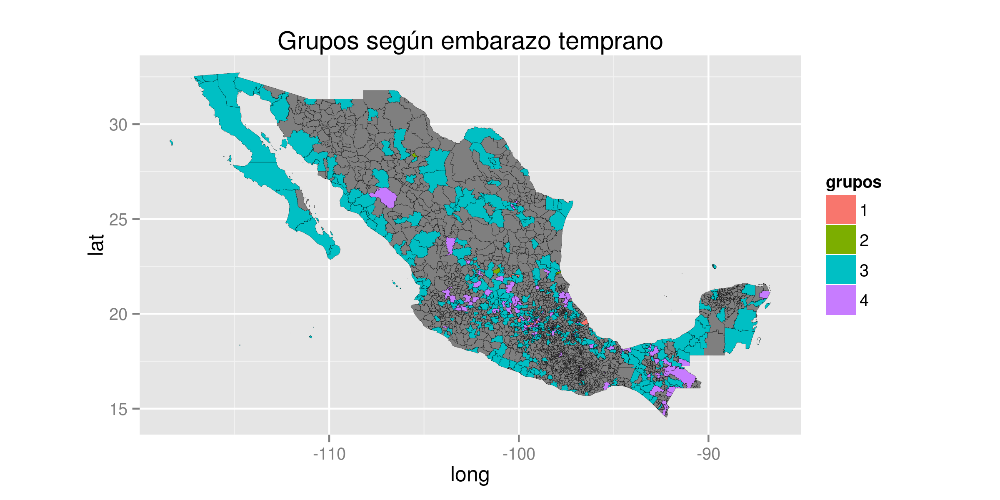
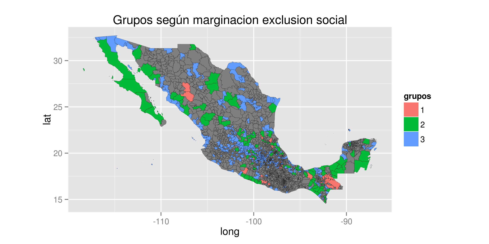
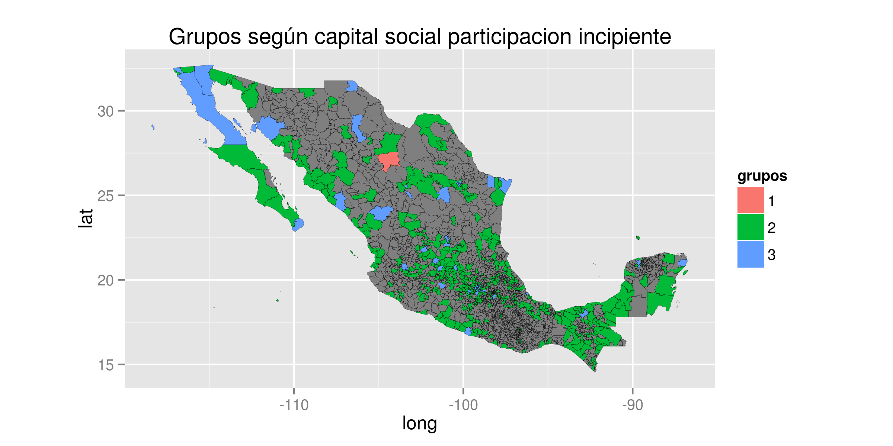
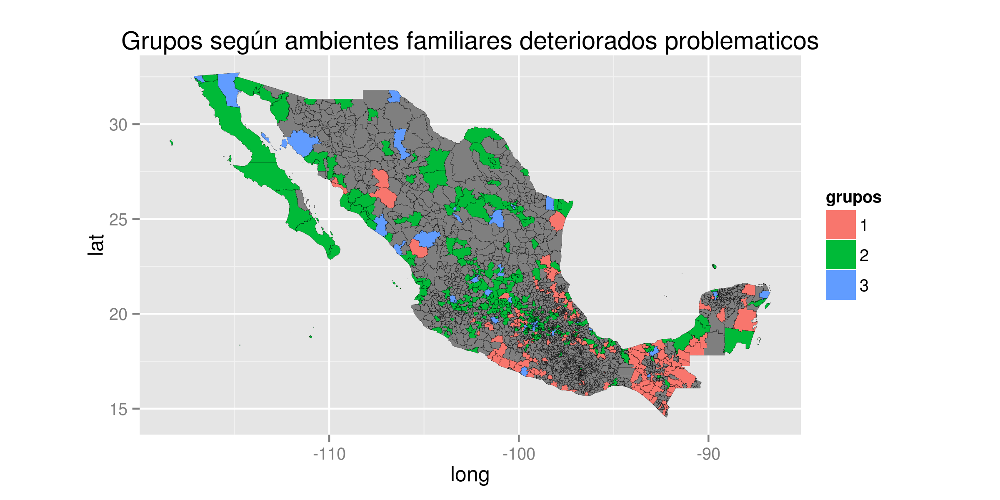

- Nos interesa modelar la violencia y el delito en el territorio mexicano enfocándonos en las zonas definidas como prioritarias y teniendo como base los factores de riesgo identificados como precursores de la violencia y el delito.
09/11/2014
Introducción
Planteamiento del problema
- A partir de la creación del Programa Nacional para la Prevención Social de la Violencia y la Delincuencia 2014-2018, se ha creado la necesidad de tener un conjunto ordenado de indicadores que permita dar seguimiento, evaluar y generar las recomendaciones necesarias para que año a año se cumpla el objeto de atender los factores de riesgo y de protección vinculados a la violencia y a la delincuencia.
Planteamiento del problema
Evaluación de las variables asociadas a los factores de riesgo.
- Modelo explicativo con reporte.
Posible propuesta de indicadores futuros.
Fuentes de datos
- CONEVAL: Resago social (censo 2010).
- INEGI:
- Censo
- Encuesta Nacional sobre la Dinaámica de las Relaciones de los Hogares (ENDIREH)
- Encuesta ENVIPE (2013)
- DENUE
- SEP
- Censo educativo (2013).
- ENLACE (2013).
- ENCUP (Gob e INEGI).
- SINAIS
- Egresos hospitalarios
- Recursos de salud
- SESNSP (Variable dependiente).
Problemas con los datos y modelado.
- Años.
- De cada fuente de los datos se toma el último año.
- Medición de los factores de riesgo.
- Encuestas
- Son estatales.
- A todos los municipios.
- Considerar el muestreso de los municipios (No es trivial).
- Espacios públicos.
- NA's.
- Registros admin: 0's.
- Encuestas: muestreo en todos los mun.
- Enlace:
- Hay menos registros públicos que los se reportan.
Modelo
- La idea es modelar algún agregado de los delitos por municipio.
- Controlar por el tipo de delito.
- Violencia, no violencia.
- Bancos, empresa, otros.
- Robo común, homicidios, delitos patrimoniales.
- Transportistas, sindicatos, particulares, negocios.
- Utilizar como variables explicativas los factores de riesgo.
- Individuales, familiares, comunitarios, escolares, sociales.
Estadística Descriptiva Inicial
Embarazo temprano

Marginación y exclusión social

Falta de oportunidades laborales, informalidad y desocupación

Espacios públicos insuficientes y deteriorados

Capital social y participación incipiente

Deserción escolar

Consumo y abuso de drogas legales e ilegales

Ambientes familiares deteriorados y problemáticos
